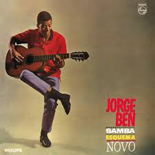

O BOOMBAP PERFEITO
Autor/Cantor: Grafiteh
Clique para ouvir ↗Autor/Cantor: Grafiteh
Clique para ouvir ↗Autor/Cantor: DK 47| Major RD | Mc Hariel | Lord | Mc Marechal | Leci Brandão
Clique para ouvir ↗Autor/Cantor: Nego Max
Clique para ouvir ↗Autor/Cantor: Grandson (feat. Jessie Reyez)
Clique para ouvir ↗Autor/Cantor: Arctic Monkeys
Clique para ouvir ↗Autor/Cantor: Chuck Berry
Clique para ouvir ↗Autor/Cantor: Jotapê
Clique para ouvir ↗Autor/Cantor: Guri
Clique para ouvir ↗Autor/Cantor: Yago Opróprio
Clique para ouvir ↗Autor/Cantor: Bill Withers
 Clique para ouvir ↗
Clique para ouvir ↗
Autor/Cantor: M83
Clique para ouvir ↗Autor/Cantor: Jorge Ben Jor
 Clique para ouvir ↗